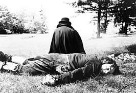

Thursday, May the 17th, 2007
back to: title, date or indexes
“Daumer plied [Kaspar] Hauser with a succession of substances, gauging each time his strong and hypersensitive reactions. Anything might throw the boy into a fit, cause cramps or compulsive shivers, or plunge him into a sudden unconsciousness. Daumer wondered at the odd succession of the boy's sensitivities. Thunderstorms, the full moon, brandy, loud noises, quiet noises, squeezed cheese, bright daylight, beer, cats, spiders, snakes, flowers and grape juice—all these things powerfully moved him. He was also found to dislike beards, the colour black, and comedy.”
From Savage Girls And Wild Boys : A History Of Feral Children by Michael Newton

Hooting Yard on the Air, November the 29th, 2018 : “Glad Tidings From Pointy Town” (starts around 20:48)